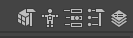
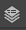
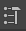
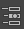
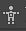
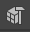

Agrupa funciones y herramientas relacionadas entre sí en diferentes menús.
En Maya tenemos menús estáticos y menús variables que podemos cambiar de acuerdo con el flujo de trabajo en el que estemos trabajando con el conmutador de menús.
La línea de estado comprende un atajo a funciones de uso frecuente, así como crear y abrir archivos, deshacer y rehacer, alinear objetos, trabajar con simetría, opciones de renderizado y datos de la cuenta de Autodesk.
Agrupa en pestañas diversas herramientas de uso frecuente.
Son distribuciones de paneles y herramientas, adecuadas a diferentes flujos de trabajo.
Muestra y oculta los paneles Attribute Editor, Channel Box, Modeling ToolKit, Tool Settings y Character controls

 Channel Box/Layer Editor
 Tool Settings
 Attribute Editor
 Human IK
 Modeling Toolkit